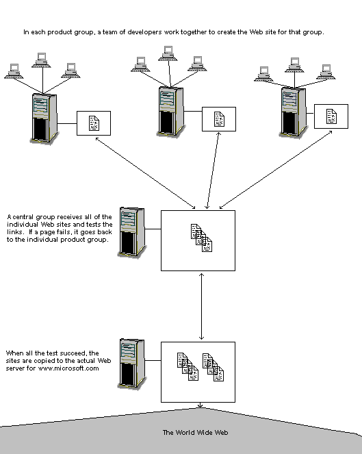
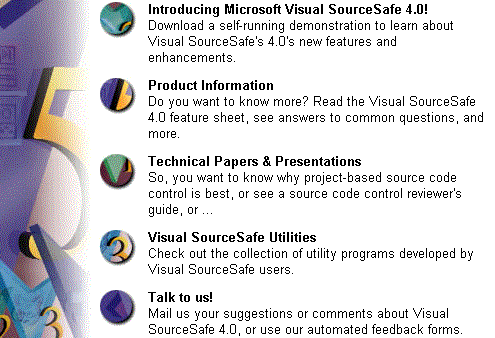
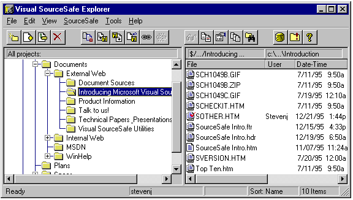
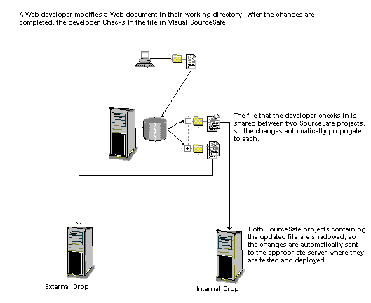

|
| ||
|
| ||
Updated March 1996
Contents
Problem Definition
Organizing Web Pages into Projects
Sharing to Track the Two Webs
Shadow Directories for Testing/Deployment
Keyword Expansion for Tracking
The Bottom Line
Abstract: Over 10,000 documents make up the pages of Microsoft's corporate Web site, http://www.microsoft.com. Over the course of the next year, this number is expected to climb to over a million documents, authored by hundreds of people. Maintaining a Web site of this magnitude is not simply a matter of writing HTML syntax: it is a large-scale management and coordination task. The Visual SourceSafe team has developed an approach based on the existing content management capabilities in Visual SourceSafe to automate and securely track the many changes that occur within the group's Web content.
Since the original publishing of this document in January 1996, other groups at Microsoft who submit content to www.microsoft.com have started using Visual SourceSafe to manage their Web content. The Visual Basic®, Microsoft® Visual Basic® Scripting Edition (VBScript), Visual FoxPro™, Internet Control Pack, and Visual SourceSafe™ Web pages are all managed using Visual SourceSafe. This paper outlines a process that utilizes Visual SourceSafe sharing, keyword embedding, and shadow directory capabilities to provide a solution to Web content management today.
Many people work together to create, support, and update material for the Microsoft Web site. Combining a large number of documents, people, and updates creates a complexity that is not easily managed without the help of an automated solution.
Below is a an example of a process used for submitting and updating Web page content for inclusion in the Microsoft Web pages without the help of Visual SourceSafe, as illustrated in Figure 1.

Figure 1. Process for submitting and updating content for the Microsoft Web site
There is one further complicating factor. In addition to the external Web, Microsoft also has an internal Web. Each product group creates and maintains its own site for the internal Web: these pages do not go through the same centralized testing process. For most product groups, the pages on the internal Web are the same as the pages on the external Web, with the addition of information that is proprietary or only interesting to other Microsoft groups. So when a product group changes a page, it must do its own testing first; and then copy that page, both to the central testing group for the World Wide Web, and also to its own server for the internal Web. Some pages, however, are only copied to one site.
The challenge faced by Microsoft, and other teams or corporations who are instituting similar systems, is to manage this rapidly expanding body of information. HTML writers should focus on creating content; testers should focus on testing links as rapidly as possible and getting updated information onto the server; and all of the parties concerned should spend as little time as possible asking questions such as "Who worked on this document?", "Where should I copy it to?", "What happened to the version that worked?" The Visual SourceSafe group uses Visual SourceSafe features such as shadow directories, keyword expansion, and sharing today to automate file tracking and versioning, keeping the system manageable.
A Web site is organized as a main directory, with a starting page (usually called DEFAULT.HTM), and then other pages and subdirectories stored in a directory tree on the Web server. The first step in using SourceSafe is to copy all your files into a SourceSafe project tree that mirrors your directory tree. (This can be done as easily as dragging a folder from the Windows® 95 Explorer into the SourceSafe Explorer.)
For instance, the Visual SourceSafe main Web page looks like the following.

Figure 2. Visual SourceSafe main Web page
If users click, for instance, "Introducing Microsoft Visual SourceSafe 4.0", they jump to a list of introductory topics and papers, and so on, for each of the other buttons.
On the Web server, the main URL http://www.microsoft.com/ssafe is represented by a directory containing a number of files. Each topic in the above list is a subdirectory, and the white papers are files in those subdirectories.
In Visual SourceSafe, these relationships are represented by a SourceSafe project tree that mirrors the directory hierarchy exactly. Figure 3 shows an actual screen from the Visual SourceSafe Explorer, showing the database used by the Visual SourceSafe Web team.

Figure 3. The Visual SourceSafe Explorer window
Under "External Web" (which represents the main URL directory) is a SourceSafe project called "Introducing Microsoft Visual SourceSafe 4.0." This project contains files that represent the pages the user reaches from that jump. As the screen illustration above shows, one file -- SOTHER.HTM -- is currently checked out by a user named Stevenj. When Stevenj clicked "Check Out" for this file, a copy was made in his local working directory on his computer. He is now editing this file and testing it locally. When he completes his changes, he will check the file back into Visual SourceSafe, thus making his changes available for the rest of the team.
The benefits of using Visual SourceSafe in this way are the standard benefits that version control has always offered to professional developers. It helps coordinate the team, by keeping track of which people are working on which files. Visual SourceSafe also keeps track of old versions of all the files in a very disk-efficient way, making it easy to revert to an old state of a file, or of an entire project.
In addition to the "External Web" project discussed above, there is another project in Visual SourceSafe representing the "Internal Web." Like the external Web, this project consists of a number of subprojects and files (not shown in Figure 3) that reflect the hierarchy of directories on the SourceSafe Web site. However, this project builds a completely different site -- the SourceSafe internal Web site, which is available only to other Microsoft groups. This Web site is hosted on a completely different server from the external Web. In addition, some of the files between the two sites differ, although most are the same. When a developer modifies a file, that modification may affect one site, or it may affect both -- and it is obviously critical that the file get copied to the appropriate sites!
Sharing is the Visual SourceSafe feature that automates tracking the simultaneous Webs. Sharing simply means that in Visual SourceSafe, one file can exist in multiple projects at the same time. For instance, the file "Top Ten.htm" is used on both the External and Internal Web sites -- in both cases, the file exists in subdirectories called "Introduction to Visual SourceSafe 4.0." In Visual SourceSafe, the file is shared between the "Introduction to Visual SourceSafe 4.0" subprojects under both the "External Web" and "Internal Web" projects. Visual SourceSafe stores only one copy of the file internally -- so whenever a change is made to this file in either project, that change is automatically reflected in the other project as well.
Note, in Figure 3, that the icon for "Top Ten.htm" (multiple-document icon) is different from "SourceSafe Intro.htm" (single-document icon). This reflects the fact that the former file is shared with other projects, while the latter is not. So the developer who checks in "Top Ten" knows that his change will affect other projects. You can also ask Visual SourceSafe for a complete list of projects that share a file.
The benefit is that the SourceSafe developers, in general, do not have to worry about multiple Webs. They can change a file once, and know that the change will propagate to both Webs if it should, and will only affect one Web if the file is only used once -- automatically.
So far, each developer is working in a local working directory on his hard drive, and the team is using the Visual SourceSafe database as a shared repository. But nothing is actually getting copied to the Web!
The deployment step can be handled in one of two ways. First, it can be done manually, through the Visual SourceSafe Get command. This command can be used to copy an entire project tree to a specified directory tree. Hence, the "External Web" and "Internal Web" projects could be copied to their respective directories, for the testing group and internal Web server, respectively, by using the Get command.
The SourceSafe team uses the Visual SourceSafe shadow directory feature to help automate this process further. A shadow directory is a central directory on a server that always echoes the contents of a project. Hence, whenever a developer updates a file in a Visual SourceSafe project, that file is automatically copied out to the shadow directory.
It is not advisable to make the Shadow directory the actual Web server! This increases network load on the Web server, and even more importantly, avoids the central testing process. However, the Visual SourceSafe "External Web" project is shadowed to the drop point for the central testing team, and the "Internal Web" is shadowed to the drop point for the internal tests. These drop points can act as miniature Web sites purely for testing purposes, and can also be run through automated testing utilities. Either way, once they are approved, these directories can be copied to the actual Web servers.
Note, at this point, how much happens automatically when a developer clicks "Check In"! The file is copied from the working directory on the developer's hard drive, into the Visual SourceSafe project. If the file is shared, this change automatically affects both the internal and external projects. Then the new file is copied into the shadow directories for one or both of the projects, where it will be tested and deployed.

Figure 4. Testing and deployment process
The final Visual SourceSafe feature that is particularly useful for Web development is keyword expansion. Visual SourceSafe has the ability to embed certain version control information directly into a text file.
As an example, suppose that a tester in the centralized group finds a broken link. That file will not get deployed to the central Web. Instead, the developer must be notified so the file can be fixed. So the new tracking problem is, how does the tester find and communicate with the developer?
The answer is easy if the developer puts the following line at the top of each HTML file:
<!--$Header: $-->
The syntax "$Header: $" is a SourceSafe keyword. When the file is checked in, Visual SourceSafe will automatically fill in the full SourceSafe project path of the file, the version number, the date/time, and the user who is checking it in. So the resulting line might look like this:
<!--$Header: $/Documents/External Web/DEFAULT.HTM, 4, 12/1/95, Stevenj $-->
The angle brackets, exclamation point, and dashes at either end make this an HTML comment, which will be ignored by Web browsers. But the tester who finds the bug can contact Stevenj and specify the exact file (with the Visual SourceSafe project path) and version number that has the bug!
Visual SourceSafe helps automate the process of managing large, team-based projects. The file sharing, shadow directory, and keyword expansion features, combined with Visual SourceSafe's intuitive interface and project-oriented design, make it a powerful addition to the environment of Web authoring teams. More information on the Visual SourceSafe product may be obtained via the Internet at http://www.microsoft.com/ssafe  or by contacting Microsoft technical sales at (800) 426-9400 (U.S. only) or a local Microsoft reseller near you.
or by contacting Microsoft technical sales at (800) 426-9400 (U.S. only) or a local Microsoft reseller near you.
Did you find this material useful? Gripes? Compliments? Suggestions for other articles? Write us!
© 1999 Microsoft Corporation. All rights reserved. Terms of use.